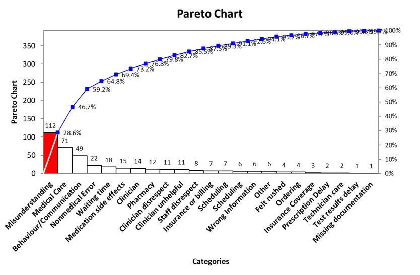

Details
In SPC assignments, I applied Product Quality basics, using.....
In the Statistical Process Control (SPC) assignment, I gained a deeper understanding of control charts, including the c-chart, u-chart, and XmR-chart. These tools were instrumental in analyzing process variations and identifying patterns within the data, such as variations outside the upper control limit (UCL) and lower control limit (LCL), as well as recognizing a new phenomenon called "runs", which indicate non-random sequences outside or inside the control limits in process data. Through this assignment, I developed a solid grasp of concepts like process stability and the importance of monitoring variation to maintain consistent quality. To further explore these concepts, I worked extensively with Excel spreadsheets, leveraging their features for statistical analysis and visualization. Additionally, I referred to Jay Arthur's Six Sigma tutorials which provided practical insights into applying SPC tools effectively in real-world scenarios. These resources deepened my understanding of how control charts can be tailored to specific industry needs. One application that particularly intrigues me is the use of the c-chart in monitoring service quality, such as ambulance response times in different geographic areas. By identifying patterns in response times and outliers, healthcare providers could uncover underlying issues, optimize resources and enhance service delivery. I aim to conduct further research on how SPC techniques can be adapted to the service industry to address challenges like variability and inefficiencies.